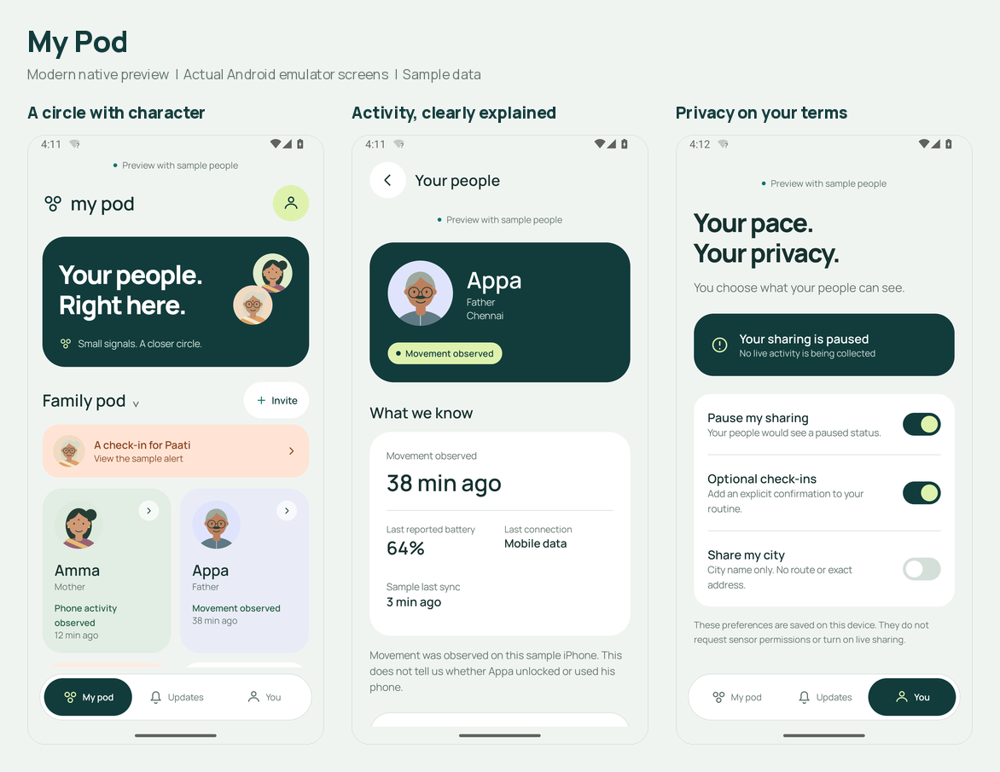

A closer look
at My Pod.
Every implemented page and key state, from joining your circle to following up on a check-in. Open a screen for its full-size image and the steps behind it.
This is a sample-data preview, not a live monitoring service. All images were captured from the Android app. Native iOS screenshots are not yet available.
See the design overview

All screens
Loading the screenshot library…
No matching screens. Try another category or search.
What this preview covers
Captured from the current app
Onboarding, family and empty pods, phone activity and movement, unavailable status, invitation previews, contact dialogs, check-in follow-up, privacy controls and larger-text layouts.
Planned, not represented as live screens
Real sign-in, remote invitations and approvals, sensor permissions, background collectors, schedules, server notifications and billing. Those integrations are not connected in this build.
Only gallery assets and descriptions are published here. The source audio, private requirements and application source code are not included. Activity provides context; it does not prove somebody is safe.